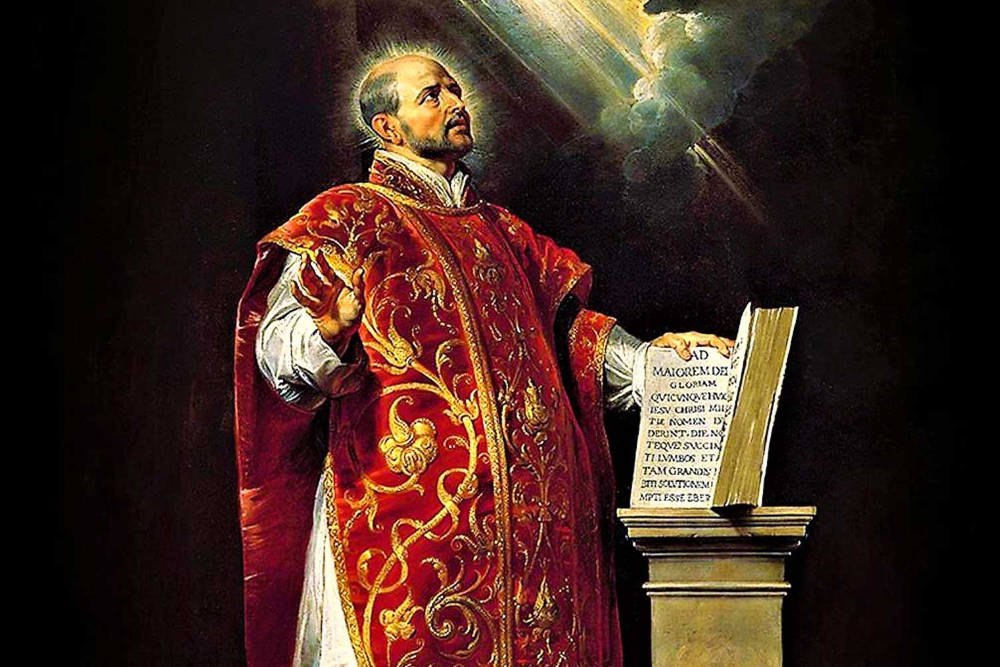

Rozeznanie
Dla tych, którzy pragną rozpoznać wolę Bożą i podjąć decyzje w świetle wiary.
Rekolekcje w ciszy w Polsce
według św. Ignacego Loyoli
Czas Łaski, Spotkania z Bogiem i Rozeznawania Jego Woli.
Czym są?
Rekolekcje Ignacjańskie są czasem zatrzymania i wytchnienia pośród codziennego hałasu i zamętu.
To szczególny czas łaski, w którym w ciszy i osobistej kontemplacji, z dala od rozproszeń i zmartwień, wsłuchujemy się w głos Boga:
„Mów, Panie, bo sługa Twój słucha”
(1 Sm 3,9–10)
Dla kogo?
Dla tych, którzy pragną rozpoznać wolę Bożą i podjąć decyzje w świetle wiary.
Dla osób, które chcą wejść głębiej w ciszę, Słowo Boże i osobistą relację z Chrystusem.
Dla każdego, kto potrzebuje zatrzymania, sakramentów i duchowego uporządkowania życia.
Jak to wygląda?
Na stronie głównej zostawiamy tylko krótki zarys. Pełniejszy opis przebiegu rekolekcji znajduje się na osobnej stronie.
Kto napisał Ćwiczenia?

Św. Ignacy Loyola (1491–1556), założyciel Towarzystwa Jezusowego i autor Ćwiczeń Duchowych, po swoim nawróceniu odkrył drogę modlitwy i rozeznawania, która pomaga człowiekowi rozpoznawać poruszenia serca, odkrywać wolę Bożą i wybierać dobro. Jego duchowość do dziś prowadzi niezliczone dusze do głębszego spotkania z Bogiem.
Dowiedz się więcejO co mówią Papieże?
Świadectwa
Terminy w bieżącym roku